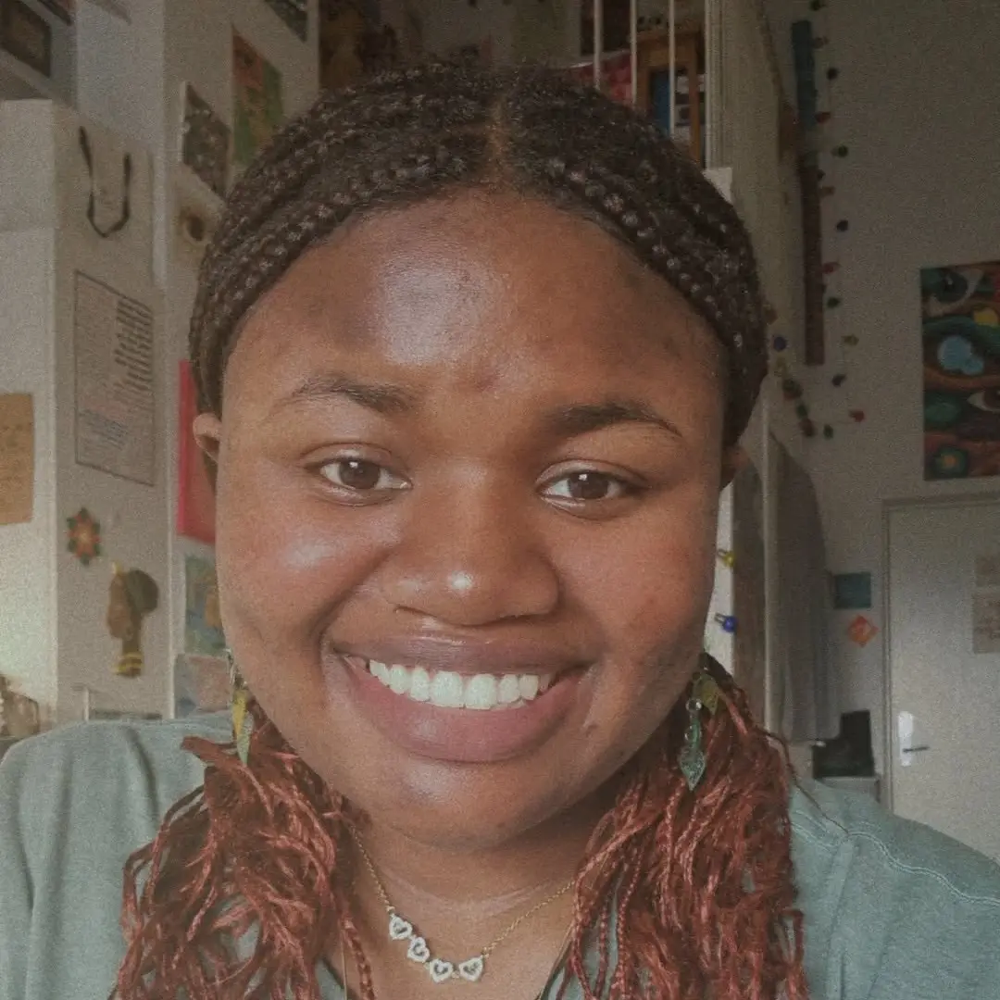
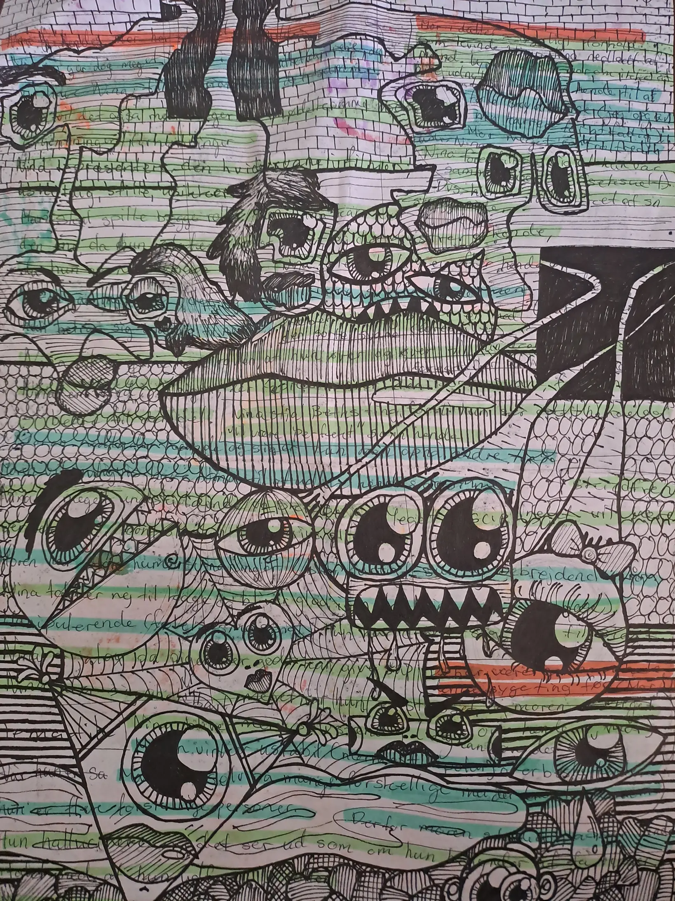
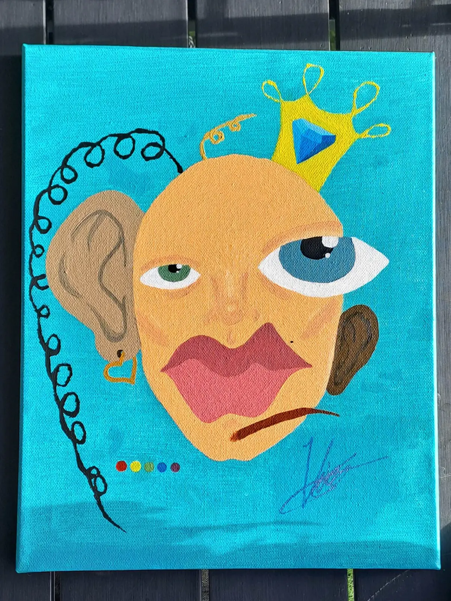
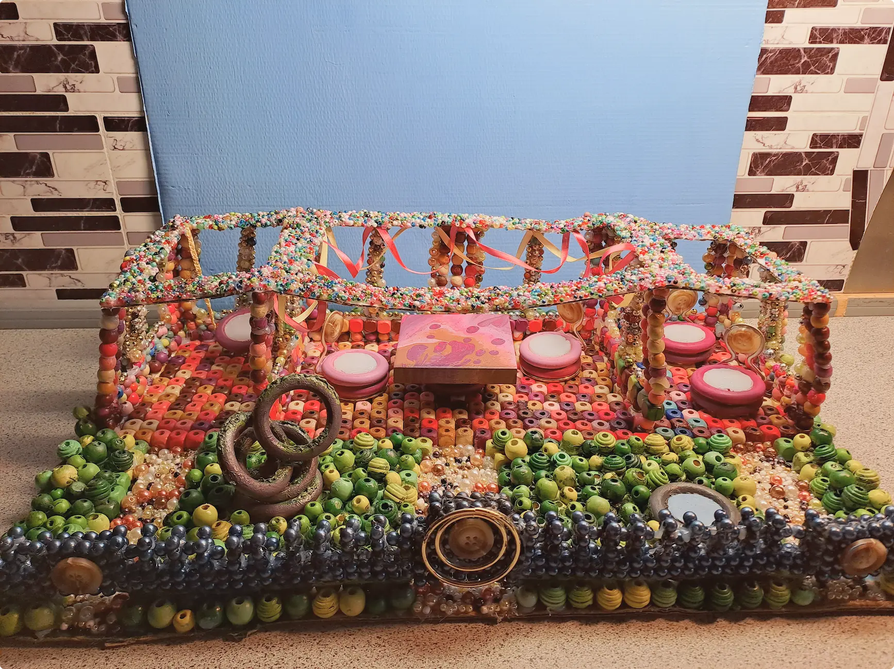

Hej!
Jeg hedder Vic-tå-wri O-mo-ni-joja Åh-KO-sun. Jeg er 20 år gammel og multimediedesign-studerende. Mit studie omhandler både frontendudvikling, design, content creation, video- og billedredigering og UI-design, men jeg er blevet virkelig glad for kodning. Det kommer mere naturligt til mig end de andre ting. Jeg går kun på 2. semester, så der er stadig virkelig meget at lære, men det er dét jeg vil arbejde med (hvis jeg kan få lov for det store AI-uhyre).
Mest af alt elsker jeg Jesus, og så kan jeg godt lide at lytte til musik. Jeg er fra Nigeria, og øhh... Der er ikke ret meget andet.



Jeg kan lide at tegne og male.
Jeg kan lide at bygge modeller og meget andet. Jeg siger ikke mere for så skal jeg kode en til "side".
Men tjek min anden portfolio side ud for mere: Portfolio site - Eksamen
